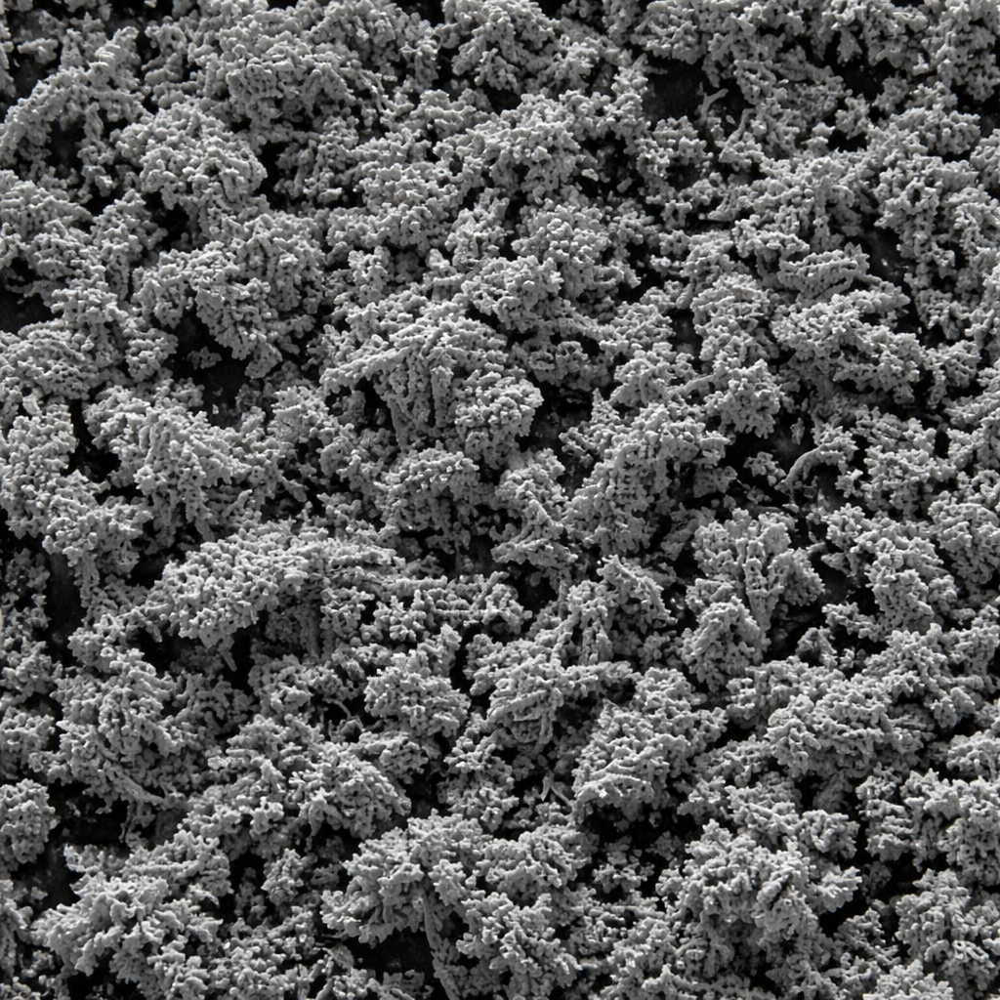

Technical insights, industry trends, and application guides for electrolytic copper powder.

When you look at electrolytic copper powder under a microscope, you'll see a beautiful tree-like branching structure called "dendritic morphology." This isn't just aesthetically interesting — it's the key to why electrolytic copper powder performs differently from atomized powder in critical applications.
Read More →
Copper powder plays four critical roles in friction materials: thermal management, friction film formation, structural reinforcement, and noise dampening. Understanding these functions helps you select the right grade and optimize your formulation for consistent braking performance.
Read More →With six precision grades from A118 to A210, selecting the right electrolytic copper powder can seem complex. This guide walks you through the key decision criteria — apparent density, flowability, surface area, and application requirements — to help you make the right choice.
Read More →Electrolytic and atomized copper powders have fundamentally different morphologies that make them suited for different applications. Dendritic electrolytic powder excels in friction materials, PM, and diamond tools, while spherical atomized powder is preferred for 3D printing and thermal spray.
Read More →
IS 4848, IS 4840, IS 460, IS 440 — and their ASTM equivalents B212, B213, B214, E53. Understanding what these standards mean, how tests are performed, and how to read a Certificate of Analysis is essential for quality-conscious buyers of copper powder.
Read More →
Copper's unique combination of thermal conductivity (401 W/m·K), toughness, and alloyability makes it the preferred matrix material for diamond cutting and grinding tools. Learn how copper content, grade selection, and hot pressing parameters affect tool performance and life.
Read More →
North American regulations (California, Washington) limit copper content to <5% in some automotive brake pads due to environmental concerns. However, heavy-duty applications, railway brakes, and industrial friction materials remain largely unaffected. Here's what manufacturers need to know.
Read More →
Every batch of Arti Metal copper powder undergoes six categories of testing before it leaves our facility. From Hall Flowmeter measurements to ICP-OES chemical analysis and SEM morphological assessment — here's an inside look at how we ensure consistent quality.
Read More →
From mixing protocols and compaction parameters to sintering conditions and dimensional change expectations — this comprehensive guide covers everything you need to know about processing electrolytic copper powder in powder metallurgy applications.
Read More →
Electrolytic copper powder is a key ingredient in metal-graphite and copper-graphite carbon brushes for motors, generators, and slip rings. Learn how copper content (10–80%) affects conductivity, wear rate, and thermal performance — and which grades work best.
Read More →Contact us to receive our latest technical guides and product updates directly to your inbox.